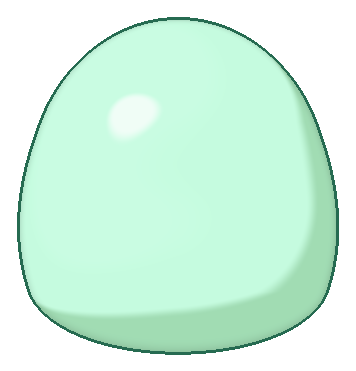
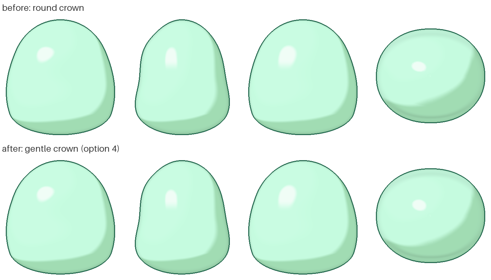
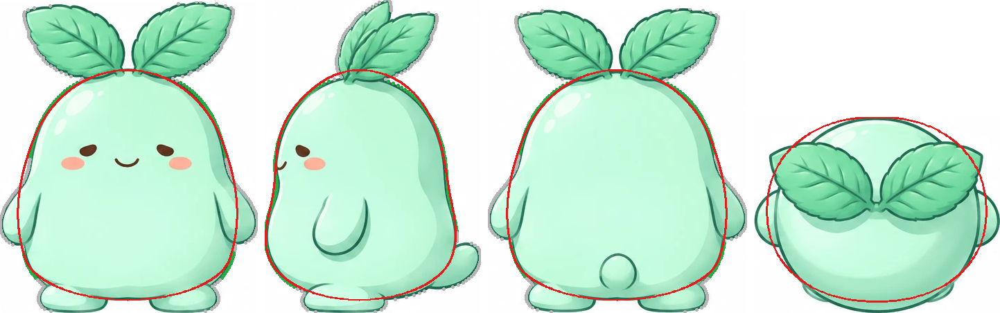

ドラッグで回転 · ホイールで拡大
読み込み中
Aポーズの4方向画像から再構築した胴体の3D形状です。スプライトスタックへの変換前の段階です
Preview/front.png · side.png · back.png · top.png（3Dモデルからの直交投影）



Preview/head_before_after.png · 比較した4案は Preview/crown_options.png

赤 = 3Dモデルの輪郭 · 緑 = 計測に使った輪郭点 · 灰 = 腕・足・しっぽ・葉として除外した点
